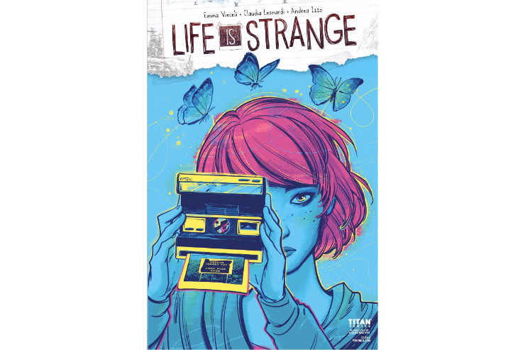
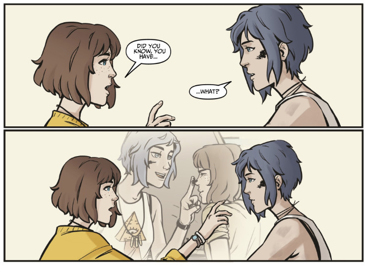
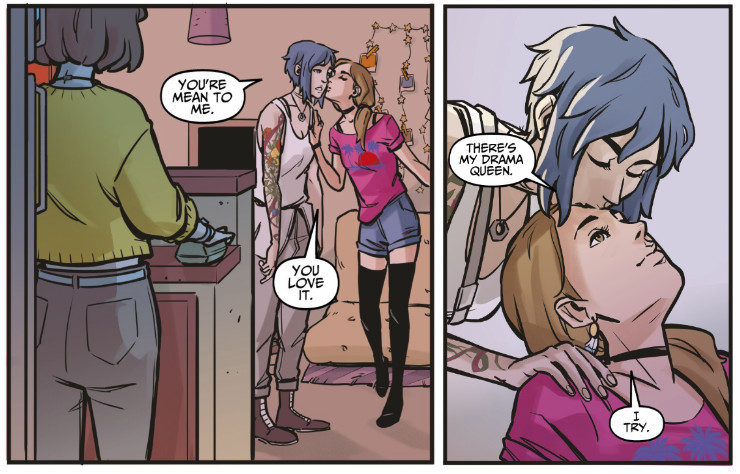
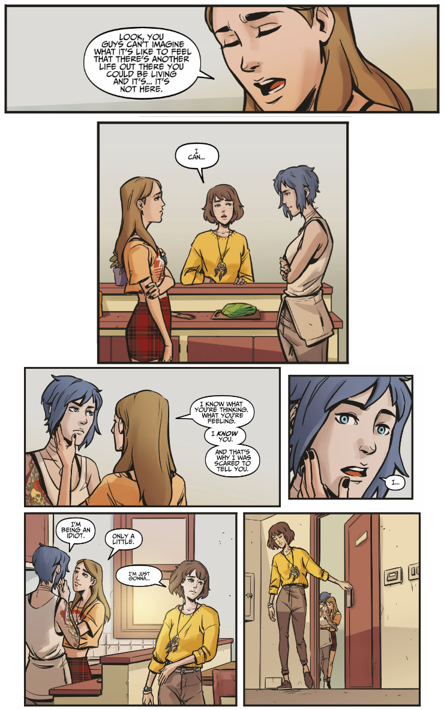

Life is Strange comic book vol. 5 (Waves #1)
Today I read the fifth issue of Life is Strange comic book, the one opening a new story arc that is supposed to build on the foundations of Dust. Here you’ll find my thoughts on the new issue and its storyline.
As you probably know by now, originally Life is Strange comic book was intended to be a finished 4-issue story. Due to its popularity and huge demand publisher decided to turn it into an ongoing series with multiple story arcs. First four issues concluded the Dust story arc and the current one, issue number 5, begins a new one, mysteriously called Waves. Is it a subtle hint that we should expect another natural disaster like Arcadia Bay’s tornado, or maybe it refers to the tides of time interfering with Max’s fate? I don’t know yet, but for sure the new name is intriguing.
If you forgot what happened in previous issues you can read my articles about them. Just a quick reminder: Max we knew from the comic book has left the main timeline and chose another reality, the one in which Chloe and Rachel were together in LA, to live in. There was a subtle hint (later confirmed by the writer, Emma Vieceli) that another Max (the right one?) takes place of the previous Max in the timeline of the abandoned Chloe.
I didn’t know whether the first issue of Waves would continue the story of Max who travelled to another timeline to live with Chloe and Rachel or Max who replaced her in the main timeline of Dust and reunited with Chloe during the memorial ceremony in Arcadia Bay.
First look at the issue #5 of Life is Strange comic book makes me wonder about the peculiar cover art. Max with blue skin and clothes (and pink hair) takes a photo using an instant camera while three butterflies (also blue) fly above her. In the picture there is a sign saying Oregon thanks you. Come back soon. I must admit that I kind of like the new appearance of Max here (especially her pink hair looks cool), it reminds me of some sort of an underwater scenery (maybe that’s the reference to the title of this story arc?). Next we have a two-page recap of the events depicted in the final issue of Dust.
 The new cover stands out from the previous ones, clearly indicating the beginning of a new story arc
First scenes of the new story arc are much more peaceful and relaxing than the ones from Dust. In Dust we saw Max being alone amid a swarm of butterflies, with her nose bleeding and Chloe nowhere to be seen. Waves introduces us to vibrant and colourful atmosphere of Santa Monica where we follow Max working on her laptop in a coffee shop ran by her friend/customer Paul. It bears an important implication: apparently Waves continues the story of Max who moved from the original timeline to the one with Chloe and Rachel living together. Which means we don’t get to see (yet or at all) what happened to Chloe that was left behind in Arcadia Bay nor we can witness her reunion with another Max that entered that timeline. It also means that Chloe presented in Waves is a different Chloe from the one we had seen in previous issues. It makes me a bit sad, because I really liked that Chloe and I appreciated the way in which she grew as a person, dealing with the loss of her mother, her home, her town. I hoped that we would get to see how she deals with seeing a new Max, how both of them attend the ceremony of unveiling the memorial, meet with the High Seas, etc.
In the new timeline, two years after her final travel through the Transect, Max still works as a photographer, which is an uplifting thing. I’m happy to see that what she had suffered from the hands of Jefferson did not ruin photography for her and she can still find joy in working with the camera. She talked about taking some photos for the coffee shop owner, Paul, to show the interior of his shop on the website. There were only two of them, Max and Paul, inside, not counting a young boy wearing a long black coat, with a clear sign of distress on his face. It looked like Max was the only one who saw him. Even Chloe, who went into the shop few minutes later, completely ignored the boy.
From the conversation taking place between the girls I learned that Max lives with Chloe and Rachel. Chloe works in an auto repair shop and Rachel is going to auditions, probably wanting to become an actress. On one hand it’s sweet that Chloe and Rachel took Max under their roof (when Dust finished I had no idea how close Max would become with the girls, considering the fact Chloe hadn’t seen her for years). On the other hand it’s… awkward. I mean, Rachel and Chloe are a thing in this reality, so as much as Chloe is happy to have Max back in her life, I can’t shake the impression that living with your former ex best friend and her girlfriend is the very definition of thirdwheeling. Wouldn’t Max prefer to give Chloe and Rachel some space? Wouldn’t that be hurtful for her to see the display of affection of one girl for the other? I know that she chose this reality specifically to give Chloe a chance to decide what she wants. However, if two years later Chloe is still with Rachel I think it’s pretty clear what she wants (at least in this timeline) so Max shouldn’t really tag along with them.
Anyway, I definitely enjoyed Max’s new attire. She abandoned dorky T-shirts and grey hoodie for a more vibrant clothes. I like her dream-catcher necklace and I absolutely adore the butterfly tattoo on her wrist. Speaking of changes, I also appreciated Chloe’s necklace in this timeline, a single nut. I like to thing she took this nut from her old pickup that she had found in American Rust, so a part of Arcadia Bay is still with her all the time.
 It’s good to see some peaceful, adorable moments, without nosebleeds, flickering timelines and tornadoes
Next couple of scenes take place in the apartment where the three girls live. There’s a lot of affection between Chloe and Rachel, with Max standing nearby. It’s… awkward. Weird. It doesn’t seem like it bothers Max but it does bother me. I feel like Max shouldn’t be there, it’s like she’s interrupting something. For me, as a Pricefielder, these scenes were painful to see. I know that Chloe is happy with Rachel and now she also has her best friend at hand, but I still firmly believe that the comic book should not be headed that way. It was supposed to continue the story of Life is Strange and Life is Strange was about Max and Chloe. I know it’s not feasible economically but there should be two separate editions of the comic book. One with a storyline describing Pricefield after Life is Strange and one showing Amberprice after Before the Storm. Trying to merge it into one happy Amberpricefield will not work for everyone. I will even risk and say it will not work for the vast majority of fans.
 Thirdwheeling much, Max?
I’m sure Emma Vieceli was trying her best to come up with the story that would satisfy as many fans as possible or that would at least disappoint as few fans as possible. But taking the “safe” route with Max, Chloe and Rachel living happily together seems cheesy to me. And it is not a very probable outcome. There is one more thing. Rachel in the comic book is not Rachel we know from Before the Storm. She has different personality and character, she acts differently. Sure, there are six years between the events of Before the Storm and Life is Strange comic book, she could have changed during that time and most surely she did. But the comic book Rachel is to the in-game Rachel like the Nightmare Max to the regular Max.
Max spends some time thinking about the evens of Dust and Chloe she left behind in Arcadia Bay. She misses that Chloe, she misses time when she knew her friends and they knew her. This part was done in a good way. I like the fact that Max actually contemplates things, tries to understand them and tries to understand herself. She ponders her decision to leave that Chloe.
In the transect I looked for the brightest light that would let me in… And it drew me here. And I’ve made the most of it ever since. I promise. It’s… a good life. But it’s not the life I made with you and I want to know you’re okay. I just… I wish there was a way to know. I can live with loneliness if I could just know.
That’s the thing that was my main problem with the ending of Dust. Max has sacrificed her happiness for her idea of Chloe’s happiness. She can’t be sure whether this Chloe in new timeline is actually happier that the Chloe left behind, she also doesn’t know whether Chloe left in Arcadia Bay is happier now with the new Max that took her place. It is quite possible that Max’s sacrifice actually didn’t improve anything. That it was meaningless, unnecessary. Additionally, by introducing multiple realities, multiple Maxes that are on par with each other, Emma diminished the importance of both player choices at the end of Life is Strange as well as Max’s choices throughout the entire comic book (including choices we are yet to see). It doesn’t really matter what Max does, who Chloe chooses, etc., as these are neither the only nor the most important Max and Chloe. We could have an intriguing, compelling storyline with a satisfying ending, just to discover in the first issue of the next story arc that it was all meaningless, as there is a new set of Max and Chloe ready to take over. That’s what bothers me a lot with how the comic book handled the story and player’s final choice in Life is Strange. It shows that, on the contrary to the game, choices don’t matter.
The main event of the first issue of Waves was Chloe learning that Rachel is going to leave California for six months, to work with a theatre performing Shakespeare’s plays on the entire East Coast, from New York to Florida. Both Max and Chloe were surprised but Chloe took it worse due to the fact that her girlfriend is going to be absent for such a long time. There was an argument between Chloe and Rachel but they made peace soon, leaving Max in another awkward situation.
 It clearly shows this is not a place for Max. Maybe the decision she made in the transect was wrong?
When Max was wandering on the beach, thinking about the choice she made, she saw that sad boy from the coffee shop again and their eyes met for a second. Moment later he was gone. Max was afraid it could have been another flicker, but the last panel of the issue shows the boy hiding around the corner, a thin line of blood pouring from his nose. That was surprising as hell. Does it mean he has powers like Max used to? Why people weren’t able to see him but Max did? There are many questions and no answers, and knowing the pace of the Dust story arc, we won’t get any until the final issue of Waves is here.
This was… not what I expected from the new story arc. I hoped to see Chloe reuniting with Max in Arcadia Bay, instead I got the same Max with a new Chloe and Rachel. Seeing how Max doesn’t quite fit between Chloe and Rachel made this whole issue feel awkward and uncomfortable, and a bit painful to be honest. While I don’t like where the story is going, I do appreciate awesome art and beautiful vivid colours of this issue. Considering aesthetics and the art Life is Strange comic book is really good.
Yay!
- peaceful scenes in Santa Monica
- Max’s butterfly tattoo
- Paul and Perry
- references to Dust (déjà vu in the coffee shop, High Seas’ song)
- vivid colours
Nay!
- the sad guy in black
- the apparent importance of that guy to the Waves story
- the fact he might have some powers like Max
- Rachel is nothing like the actual Rachel from Before the Storm
- Max thirdwheeling Amberprice
Overall summary in three words
awkward, inconstant, colourful